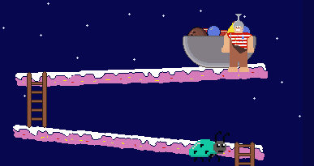

Game design and development
HTML/CSS/JS/P5.js
Introduction
This project required us to work in teams of 2 to create a game in P5.js, this was my first introduction with SCRUM. We had to create a game that was a spinoff of a classic arcade game, with these requirements, Fruity Frank came to be.
Gameplay
The goal of the game is to protect your fruit bowl from incoming enemies. You are on top of the platforms and have to throw fruits at the enemies to protect your fruit bowl.
There are 4 types of fruits you can throw:
Coconut
Banana

Grape
Pomegranate
Process
We had discussed early on my main focus would be on the game mechanics, the weapons, the art and the back-end, my partner would focus on enemies.
Something that was new for me was back-end, I had to learn this completely from scratch. I ended up using Google Firebase for this, post and retrieving data through only JavaScript.
In the end, I learned a solid amount of new things for Javascript and back-end. I learned here to use classes for Javascript and to use multiple files to make the code easier to maintain.
Play the game!